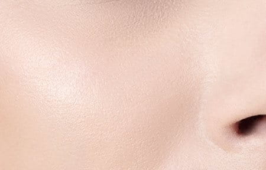
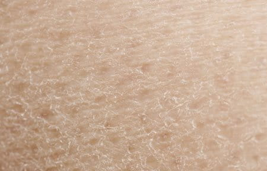
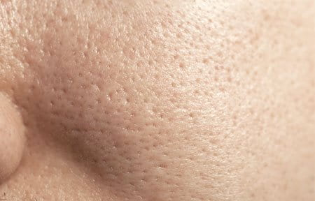

Transformando
Cuidado
Em Confiança.
Descubra seu tipo de pele e encontre
produtos que combinam com suas
necessidades e seu orçamento.
Bem-vinda à Venustra
Nosso objetivo é auxiliar você, mulher, na escolha de produtos cosméticos ao traçar o perfil geral de sua pele, além de traçar uma rotina de skincare contínua!
Tipos de Pele

Pele Normal
"Normal" é um termo largamente utilizado para se referir à pele balanceada. O termo científico para pele saudável é eudérmica. A zona T (testa, queixo e nariz) pode ser um pouco oleosa, mas o sebo total e a umidade são equilibrados e a pele nem é muito oleosa nem muito seca.
Pele Seca
O termo “seco” é utilizado para descrever uma pele incapaz de reter água no volume necessário. Isso geralmente está associado à produção reduzida de lipídios na pele. Por causa da falta de sebo, a pele seca carece de lipídios necessários para reter umidade e construir um escudo protetor contra influências externas.
Pele Oleosa
Pele oleosa "Oleosa" descreve um tipo de pele com alta produção de sebo. A pele oleosa está propensa a cravos (negros e brancos) e diversas formas de acne.Pele Mista
Na pele mista, os tipos de pele variam na zona T e nas bochechas. A chamada zona T pode diferir consideravelmente – de uma zona muito delgada a uma área estendida.Entre em contato:
Possui alguma dúvida ou reclamação? Preencha os campos abaixo
para que possamos dar suporte ao seu problema.